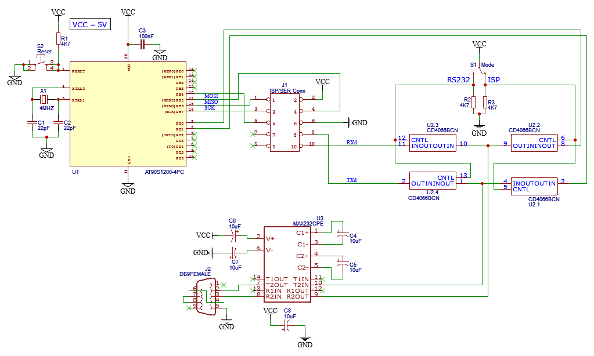

Un site plus complet est à l'étude et en construction, en attendant les liens ont été réactualisés et complétés. Enfin toute initiative ou proposition pour améliorer l'ensemble est bienvenue. Toutes publicités n'ayant aucun rapport avec les microcontrôleurs ont été purement virées.
Le but: Développer une synergie pour la progression
et le confort de tous, ramer seul est toujours plus long et pénible
qu'à plusieurs (dixit)... ;-).
Ce Site est "en cours", beaucoup de choses sont encore à faire, pour le faire évoluer
n'hésitez pas à me contacter
toute idée ou suggestion est la bienvenue, Je vous en remercie d'avance.
LE PROGRAMMATEUR IN SITU : ISPROG
J'ai mis au point un programmateur "in-situ" pour la famille AVR (1200 au 8515), il se connecte sur un port série et est piloté avec le petit programme avrp de Jon Anders Haugum. De plus il sert aussi d'interface RS232, la commutation se fait à l'aide d'un simple interrupteur, le schéma et le mode d'emploi ainsi que le logiciel de pilotage se trouvent ici. Pour tout problème ou remarque d'amélioration contactez moi.
Caractéristiques:
Programmateur de microcontroleurs AVR in situ et interface de dialogue RS232.
Logiciel de programmation ISP embarqué: Avr921.hex,
dérivé du programme Avr910 du constructeur atmel.
Logiciel de commande sous dos: Avrp1 de Jon Anders Haugum.
Alimentation à partir du montage cible ou source de tension 5V externe.
Vue du Schéma général:

Fonctionnement:
Le uC AT90S1200 est le coeur du montage et contient le soft embarqué Avr921.hex
qui permet le respect des chronogrammes de programmation ISP préconisés par le constructeur
pour la programmation/lecture de la mémoire flash de programme, de l'Eeprom de donnée interne
ainsi que des fusibles de verrouillage à la relecture et/ou programmation.
Le soft Avr921.hex est une adaptation du fichier original Avr910 de chez atmel,
les sorties Miso et Mosi ont été inversées pour que le soft original fonctionne.
Le CI Max 232 assure l'interfaçage des signaux TTL/RS232 entre le circuit et le PC.
Le CI 4066 est un quadruple commutateur qui permet l'utilisation du montage comme simple
interface de dialogue entre votre montage et un terminal quelconque,à l'aide des lignes Rxd et Txd,
la commutation entre la fonction programmateur et interface de dialogue est assurée
par un simple interrupteur à deux positions.
Un logiciel de commande graphique pour Windows/Linux est en cours de développement, à suivre...
Les fichiers nécessaires sont compressés dans l'archive: SoftsIsp.zip
Mon adresse de messagerie électronique
contact@Cliquez-pour-ouvrir-la-messagerie
| L'éditorial | Isprog | Liens AVR | Contact | Page Motorola | Microchip | Page d'accueil |